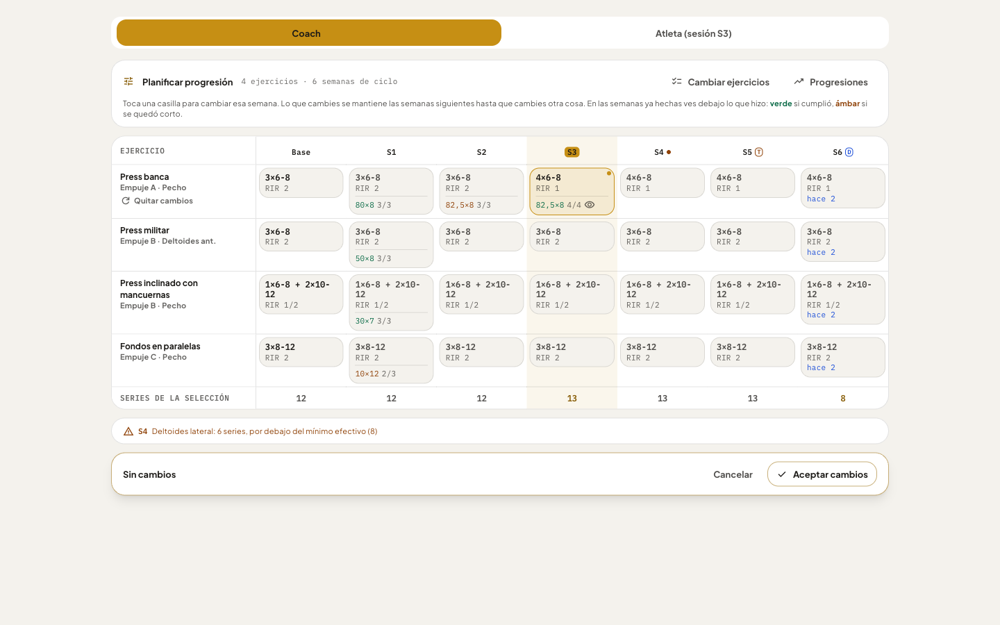

Actual · Planificar progresión (/dev/progresion)

Qué se conserva / qué se va
- Se conserva: «RIR semana a semana», «Subir series», «Repeticiones semana a semana», y la tabla ejercicios × semanas con plan vs real.
- Se retira: «Descanso entre series» y «Series de alta intensidad» de la hoja «Progresiones en un clic», y la propia hoja que aplica a todo el bloque (MesocycleManager.tsx:1248). El descanso y las técnicas siguen editables por ejercicio.
- Nuevo: objetivo de IEM por ejercicio/zona, el motor propone y el coach aprueba casilla a casilla.
Propuesta · progresión por objetivo de IEM
Javier Vergara › Mesociclo 1 › Ejercicios
Planificar progresión
Cancelar
checkAplicar 7 cambios
| Ejercicio | Base | S1 | S2 | S3 · hoy | S4 | S5 | S6 Desc. |
|---|
Press banca Pecho · objetivo IEM +20 % |
3×6-8RIR 2 · IEM 84 | 3×6-8RIR 2 · 84 | 3×6-8RIR 1 · 92 | 4×6-8RIR 1 · 98 |
4×6-8RIR 1 · 98= mantiene | 4×6-8RIR 0-1 · 101↓ RIR | 2×6-8RIR 3 · 41 |
Aperturas pec deck Pecho · objetivo IEM +30 % |
2×10-12RIR 2 · 52 | 2×10-12RIR 2 · 52 | 3×10-12RIR 2 · 78 | 3×10-12RIR 1 · 83 |
3×10-12RIR 1 · 83= mantiene | 3×10-12 + drop S3RIR 0 · 96+ técnica | 2×10-12RIR 3 · 26 |
Elevaciones laterales Delt. lateral · objetivo IEM +40 % |
3×12-15RIR 2 · 39 | 3×12-15RIR 2 · 39 | 3×12-15RIR 1 · 41 | 3×12-15RIR 1 · 41 |
4×12-15RIR 1 · 50+1 serie | 5×12-15RIR 1 · 57+1 serie | 2×12-15RIR 3 · 18 |
Sentadilla hack Cuádriceps · excluido |
Grupo no seleccionado: el motor no propone cambios aunque haya margen. |
lightbulbPor qué: agujetas medias 2/5 y contexto favorable (sueño 7 h, estrés 5) → modo dinámico · medio (20 %) permite subir. En Pecho se prioriza bajar RIR antes que añadir series porque ya está en 4 series.
Reglas de esta progresión
Grupos incluidos
PechoDelt. lateralEspaldaCuádricepsIsquios
Modo
EstáticoAplica lo programado, ignora el contexto
DinámicoAjusta cada 7 días con agujetas, sueño, estrés, motivación y rendimiento
Velocidad
Suave 10 %
Medio 20 %
Agresivo 30 %
Palancas permitidas
☑ Añadir series (máx. +1/sem)
☑ Bajar RIR (mín. 0)
☑ Técnicas de intensidad (solo aislamiento)
☐ Cambiar ejercicio
Pendiente de validar: umbrales de contexto (estrés ≥ 7, sueño < 6 h, motivación ≤ 4) vienen de la rama IH, no del Excel.